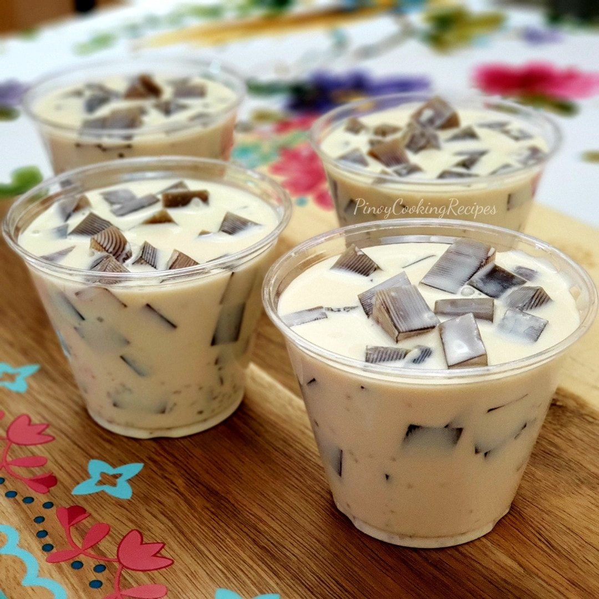

Coffee Jelly Recipe

Description
Coffee Jelly is a popular summer treet in Japan that was further popularized by the anime,
The Disastrous Life of Saiki K. Perfect for coffee and sweets lovers alike,
this easy recipe is sure to please!
Ingredients
- 2 tablespoons hot water
- 1 (.25 ounce) package unflavored gelatin
- 2 cups fresh brewed coffee
- 3 tablespoons white sugar
Steps
- Stir together gelatin and hot water in a small bowl until gelatin dissolves; pour into a
saucepan. Stir in coffee and sugar, and bring to a boil over high heat.
- Pour coffee mixture into a shallow, 9-inch square or 7x11-inch baking dish. Chill in the
refrigerator until solidified, 6 to 7 hours.
- Cut coffee jelly into cubes to serve.
Tips
For individual servings instead of cubes, pour hot coffee mixture into 4 individual glasses instead
of one large baking dish, then chill as directed in Step 2.